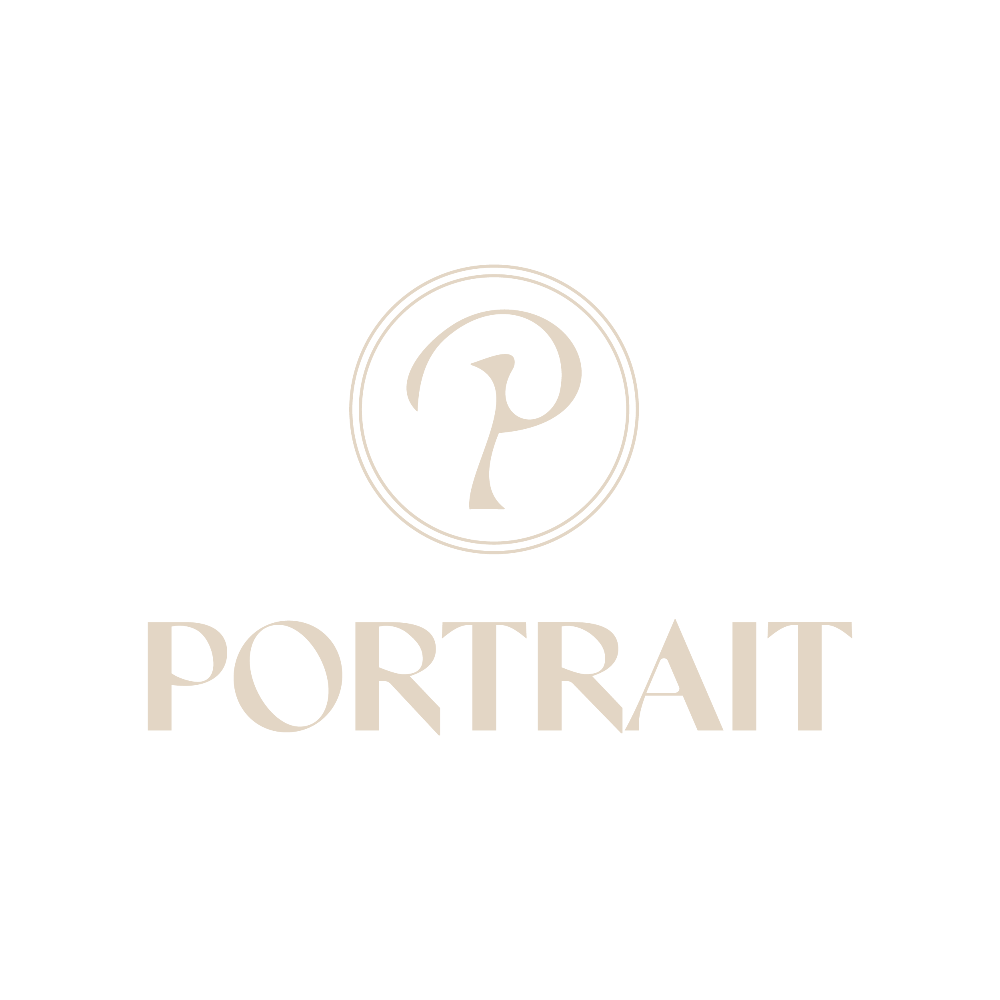

Bistro — Natural Wine — Bar
1F Hirokoji YMD Building, 1-20-25 Nishiki, Naka-ku, Nagoya
1 min from Fushimi Station
Open Mon–Sat｜18:00–24:00
@portrait_nagoya
1F Hirokoji YMD Building, 1-20-25 Nishiki, Naka-ku, Nagoya
1 min from Fushimi Station
Open Mon–Sat｜18:00–24:00
@portrait_nagoya